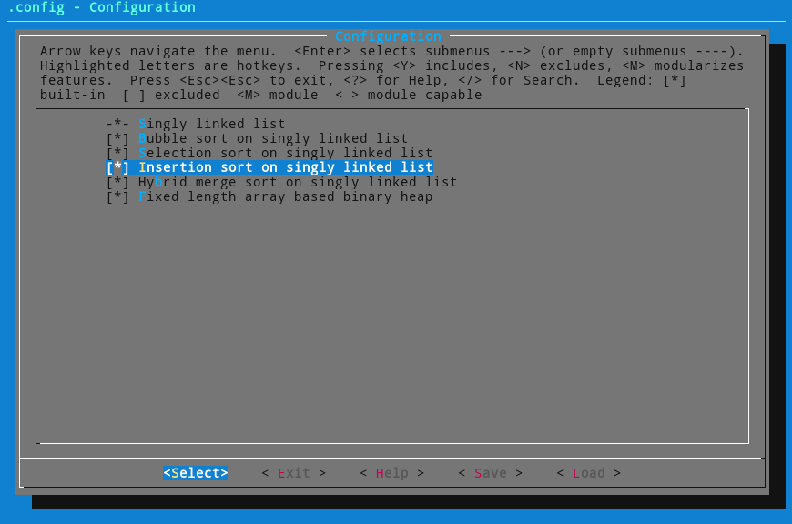

Build and install¶
Requirements¶
To build library :
- make
- gcc
- glibc (custom C library planned in the future)
- kconfig frontends
To build and run unit tests :
- cute
- gcovr
To run performance tests :
- python3
- python numpy library
- python matplot library
To build documentation :
- python sphinx documentation system
- sphinx theme from readthedocs.org
- doxygen
- breathe bridge between python sphinx and doxygen
Build and install¶
At present time, there is no complex / portable deployment mechanism implemented (this may evolve according to my spare time and contributions).
First, checkout Karn’s git repository.
From the top level source directory, run following command to configure the build process :
$ make config
You’ll get an ncurses UI allowing selection of software components to build :
Select the components you’re interested in, then build Karn library :
$ make build
The static Karn library will be produced by default into the build directory :
$ ls -al build/
total 924
drwxr-xr-x 8 greg home 4096 Jul 9 19:33 .
drwxr-xr-x 9 greg home 4096 Jul 9 19:27 ..
-rw-r--r-- 1 greg home 214 Jul 9 19:27 .config
-rwxr-xr-x 1 greg home 10320 Jul 9 19:28 array_fixed_pt
-rw-r--r-- 1 greg home 2710 Jul 9 19:28 array_fixed_pt.d
drwxr-xr-x 2 greg home 4096 Jul 9 19:28 dbg
drwxr-xr-x 7 greg home 4096 Jul 9 19:41 doc
drwxr-xr-x 4 greg home 4096 Jul 9 19:27 include
-rwxr-xr-x 1 greg home 238432 Jul 9 19:28 karn_ut
-rw-r--r-- 1 greg home 36539 Jul 9 19:33 karn_ut-cov.rst
-rwxr-xr-x 1 greg home 221480 Jul 9 19:28 karn_utdbg
-rw-r--r-- 1 greg home 33084 Jul 9 19:28 libkarn.a
-rw-r--r-- 1 greg home 207292 Jul 9 19:28 libkarn_dbg.a
-rw-r--r-- 1 greg home 36388 Jul 9 19:28 libkarn_pt.a
-rw-r--r-- 1 greg home 120156 Jul 9 19:28 libkarn_ut.a
drwxr-xr-x 2 greg home 4096 Jul 9 19:28 pt
-rwxr-xr-x 1 greg home 14416 Jul 9 19:28 slist_pt
-rw-r--r-- 1 greg home 3183 Jul 9 19:28 slist_pt.d
drwxr-xr-x 2 greg home 4096 Jul 9 19:33 ut
drwxr-xr-x 2 greg home 4096 Jul 9 19:28 utdbg
Make targets¶
Todo
document make targets and available variables